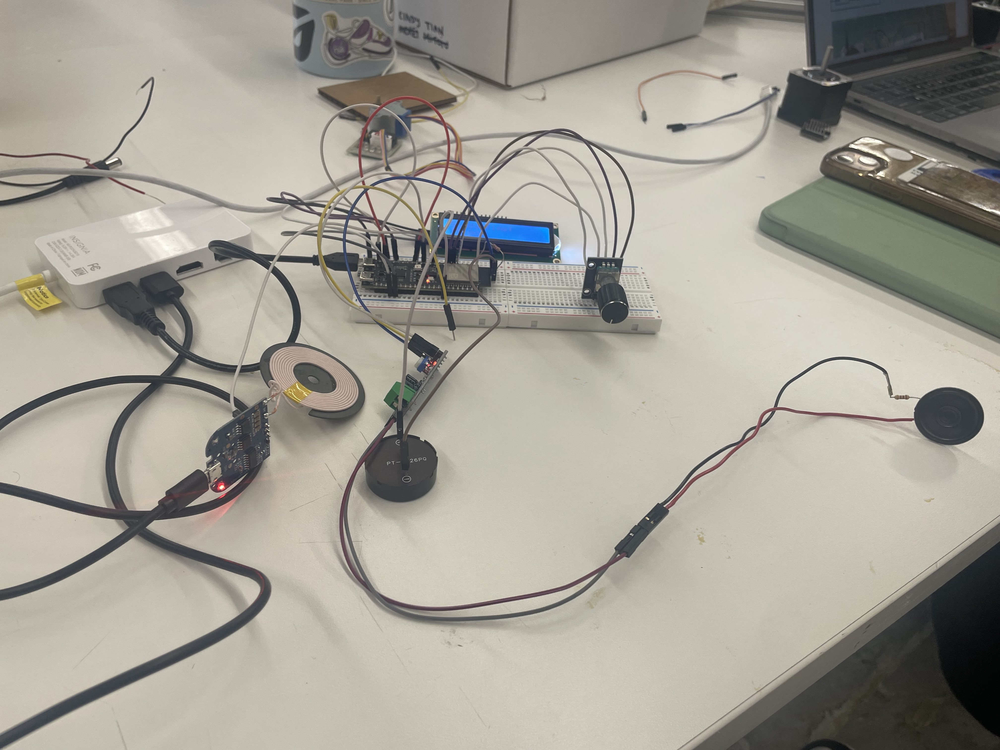
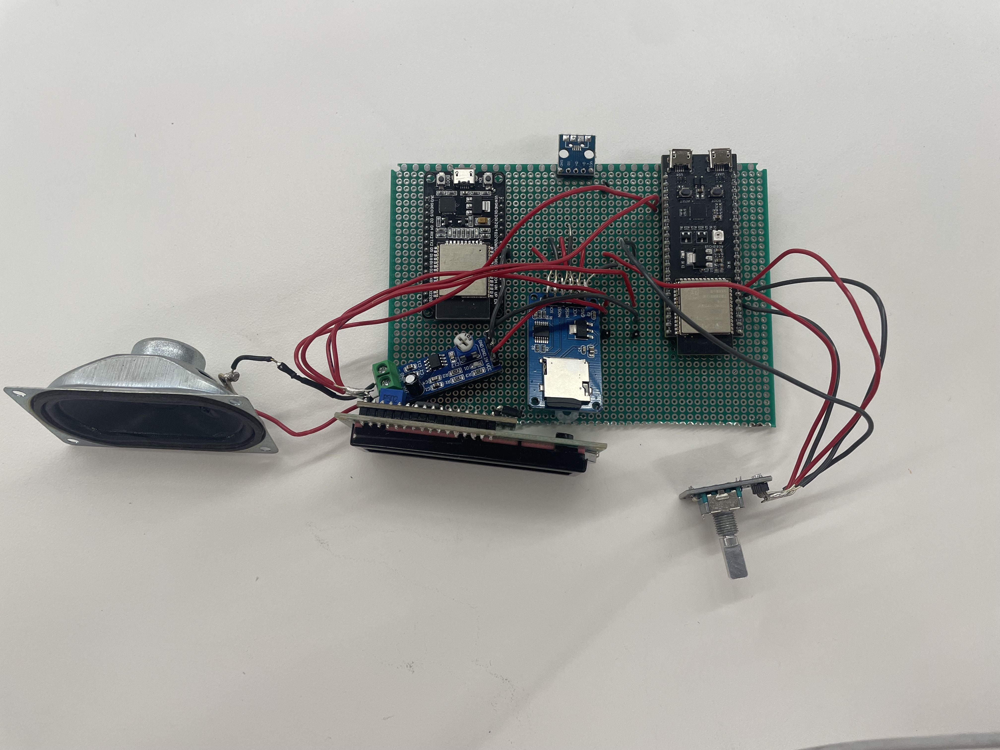
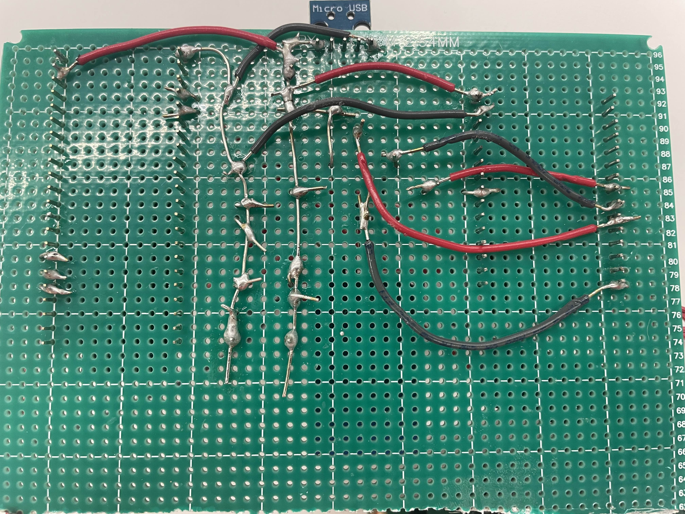

Insult Study Robot
Insult Robot: Overview
This is a robot that insults you when you procrastinate. Specifically it insults you when you use your phone you are supposed to be studying. Basically before you use the robot you specify how long you want to study for and how long you want to relax for. The robot will cycle between study mode and relax mode based on the durations that you set. So to start you place your phone on the insult robot, and if you take your phone off of the insult robot during study mode it will insult you until you put the phone back on the insult robot
Insult Robot Demo Video:
Insult Robot: Motivation
I have always been a person that procrastinates, and I wanted something that made procrastinating less entincing. I knew I wanted to do something with negative reinforcement because I thought it would be more interesting. A think my biggest inspiration for the insults was when I saw a video about a roomba that screams when it bumps into things, and I wanted to having a screaming robot. Then in combining the idea of a screaming robot, and a robot that disincentivized procrastinating which lead to have the idea of a robot that insulted you when you procrastinated on your work.
Insult Robot: Fabrication
Materials
- ESP32S2
- ESP32
- LCD Display
- Rotary Encoder
- MicroSD Card Reader
- Speaker
- Wireless Charger
- Wires
- Wood
- M3 Screws
While this Robot was more intensive on the programming side. There was still alot of work which went into the hardware and construction of this robot.
To prototype everything I just had everything in a breadboard, which was great for rapid prototyping when I was still trying to work on the functionality of the robot. However, the breadboard and the jumper wires had their flaws. The biggest flaws being the loose connections and the untidiness. While I was working if I moved the robot around wires would sometimes disconnect, and as well as jumpers had a lot of excess size leading to the circuits just be generally messy.
This lead me to using a protoboard, and soldering all of my connections together instead of making all of my connections via the bread board.
The protoboard just lead to much stronger connections between all of my electronics because they were now soldered together. As well as, using custom cut wires cut down on a lot of the clutter as the wires were now cut to be as long as they need to be, so there was very little excess length to the wires.
All of the pins of the protoboard were completely separate unlike a bread board where you have power and ground lines, in addition to the rows being connected. A lack of power and ground lines were a problem, so after a tip from Nathan, I stripped two wires down completely. I then soldered the first wire to Vin pin on the ESP32 and the 5V pin on the ESP32S2. Then the other wire to a ground pin on both microcontrollers, so there was one common ground. Now I had a power line and a ground line which I could power all the electronics with. As well as, since the VIN pins of the microcontrollers were both hooked up to the power line if you powered one microcontroller it would power the other
Wood Enclosure:
After the electronics were all wired up it was time to find an encasing to hold all of them. I wanted this box to feel very low tech so as it not distract the user and fitting in with the theme of disincentivizing procrastination. So because of this low tech theme for the enclosure, I designed to laser cut the box out of wood. As well as I wanted to refrain from gluing any of the electronics to the enclosure in case I made any mistake or if anything broke which is why there are screw holes in the enclosure to allow all of the electronics to be screwed in, so that they can be removed later if needed.
However, before the enclosure was done, I needed to make the top of the box. The challenging part being that the top of the box is that it needs to hold the wireless charger as the user will put their phone on the top of the box. In order to attach the wireless charger to the box without gluing it I decided to make wooden platform that I would screw the wireless charger into and then I would screw that wooden platform into the top of the box.
Once the protoboard was all wired up and all of the pieces of the enclosure were lasercut and assembled. The only thing that was left is to put everything together and put everything into place.
Insult Robot: Programming
This robot was very intensive on the programming side as it involved two ESP 32s. Since you could only drive a speaker with the original ESP32, but the ESP32 does not have enough pins on it to drive the, wireless charger, speaker, microSD Card, LCD Screen, and rotary encorder. Because of This issue I had to use an ESP32 and ESP32S2. In needing two boards, this separated the code into 3 parts, ESP32S2 Code, ESP32 Code, and the Code to communicate between them.
-
ESP32S2 Code: Study Timer Logic and Display
THe ESP32S2 had 4 main functions, Making the Study Timer, detecting in a Phone in on the charger, handling inputs from the Rotary Encoder, Display Information on the LCD Screen.
-
Study Timer:
So the Study Timer is based off of the Pomodoro Techinique where you Study for a certain amount of time, and then you relax for a certain amount of time. However, it is not just that simple because the timer also, needs to be paused because if a user takes their phone off of the box, then the timer needs to pause until it is returned to the box. So the Study Timer needed to be able keep track of whether it was Study Mode or Relax Mode, how much time had elapsed since entering that mode, durations for each of these modes (how long you want to study and relax for), and the ability to paused and unpaused.
-
Phone Detector:
For the Phone Detector, this was implemented as of Week 7 and you can go back and check that for more information. However, to recap there is a pin on the wireless charger which changes in voltage when the phone is placed on it. So in order to detect when a phone is on the wireless charger, I connect the pin on the wirless charger to pin 17 on the ESP32S2 and I analogRead that pin to see if their is a change in voltage to see if the phone has been added or removed
-
Rotary Encoder Inputs:
The Rotary Encoder is only used when the user sets how long they want to study and relax for. They can rotate the rotary encoder clockwise and counterclockwise to increase and decrease the duration of their study and relax time, and they can also press the rotary encoder to forward through the screens.
-
Display Info on Screen:
In order to display Info on the Screen. The ESP32S2 has to get the the information about the current state of the box, is there a phone on it or not, are we in relax or study mode, how much time has elapsed since we entered relax or study mode, and then present the relevant information to the user (whether that is helping the user set the duration of their study session, displaying the current time and mode the user is in (Study/Relax), or telling them to put their phone back), and then taking that information and sending it to be displayed on the LCD screen
Below is all of the code used for the ESP32S2
-
-
ESP32 Code: Reading From MicroSD and Playing on Speaker
For the ESP32 it just had to read the sound files from a MicroSD, and then take that sound data and play it on a speaker. The use of the MicroSD was needed to allow for the use of multiple sound files because the ESP32S2 could only handle 1 recording at a time before it ran out of memory
Below is the code for the ESP 32
#include "SD.h" #include "Insult.h" #include "XT_DAC_Audio.h" #include "esp_now.h" #include "WiFi.h" unsigned char sound[16260]; bool done = false; XT_Wav_Class *test; // XT_Wav_Class Sound(rawData); unsigned char temp[2] = {0,0} ; XT_Wav_Class Sound(temp); XT_DAC_Audio_Class DacAudio(25,0); uint32_t DemoCounter=0; bool playSound = false; void setup() { Serial.begin(115200); //Set device in AP mode to begin with } void loop() { if (Serial.available() > 0) { // Read the data from Serial String data = Serial.readStringUntil('\n'); // Process the received data // Example: Print the received data Serial.print("Received data: "); Serial.println(data); playSound = data.equals("1"); } if(!done){ if(!SD.begin()){ Serial.println("Card Mount Failed"); return; } uint8_t cardType = SD.cardType(); if(cardType == CARD_NONE){ Serial.println("No SD card attached"); return; } uint64_t cardSize = SD.cardSize() / (1024 * 1024); File file = SD.open("/Insult.h"); if(!file){ Serial.println("Failed to open file for reading"); return; } // Serial.print("Read from file: "); // int x = 0; unsigned char temp[1]; temp[0] = '1'; unsigned char buf[2]; char newBuf[2]; while((char) file.read() != '{'){ } int index = 0; while(file.available()){ while(temp[0] != '0' && file.available()){ file.read(temp, 1); } if (!file.available()){ break; } file.read(temp, 1); file.read(buf, 2); // Serial.println(((String) (char) buf[0]) +((String) (char) buf[1])); newBuf[0] = (char) buf[0]; newBuf[1] = (char) buf[1]; unsigned long value = strtoul(newBuf, NULL, 16); // Convert the hexadecimal string to unsigned long sound[index] = static_cast(value); // Cast the value to unsigned char // Serial.println(index); index++; // Serial.println(sound[index]); // Serial.write(file.read()); // x++; // if (x == 100){ // break; // } } // Serial.println("Before Close"); file.close(); Sound = XT_Wav_Class(sound); test = &Sound; // Serial.println("Got Sound"); done = true; } else{ // Serial.println("inside else "); DacAudio.FillBuffer(); if((*test).Playing==false && playSound){ DacAudio.Play(test); } // Serial.println(DemoCounter++); } } -
Communication between ESP32s
Once both ESP32s were working individually, I need a way for the to communicate. So that the ESP32S2 could communicate with the ESP32 when a phone was taken off of the insult box during study time, or when then phone is put back on the insult box. Originally, this was going to be done using ESP Now, but ESP Now stopped working unexpectedly and I could not get it back up and running. So instead I went with a clunkier but more reliable solution of serial communication. Basically I had both ESP32s plugged into my laptop which was reading the serial communication of the ESP32S2 and if it gave the signal to play the Sound or not play the Sound, my laptop would relay that information to the ESP32
Below is the code for the serial communication
import serial # Define the serial port and baud rate port = '/dev/cu.usbserial-14230' # Replace with your ESP32's serial port port2 = '/dev/cu.usbserial-0001' # Replace with your ESP32's serial port baud_rate = 115200 # Match the baud rate with your ESP32's configuration # Create a serial object ser = serial.Serial(port, baud_rate) ser2 = serial.Serial(port2, baud_rate) # Check if the serial port is open if ser.is_open: print(f"Serial communication established on {port}.") if ser2.is_open: print(f"Serial communication established on {port2}.") try: while True: # Read data from the serial port data = ser.readline().decode().strip() # Print the received data print(f"Received data: {data}") if data and data in ["1", "0"]: # Send data to the ESP32 # message = input("Enter a message to send: ") ser2.write(data.encode()) data = None except KeyboardInterrupt: # Close the serial port when the program is terminated ser.close() print("Serial communication closed.")
Insult Robot: Final Reflections + Improvements
I definitely learned a lot of the course of this project. Before reading period I was quite ahead on my project, and because of that I thought it would be a good idea to add additional features. I want the phone to be on a platform in a box and rise up to the user when they started their study session, but I so realized I had bitten off more than I could chew and I still needed to attach the electronics the protoboard and make the enclosure which I also heavily underestimated. Overall, I think this project taught me a lot about prioritization, and making sure you have the most critical systems working before you move onto the optional features.
Overall, I acheived the goal that I set in the beginning of this class which was to make a robot which insults me when I use my phone when I am supposed to be studying. While I am very glad with achieving that goal and the progress I made, there is still a lot of room for improvements. I mean the first improvement I wanted to make is either using only one microcontroller (which coudl be possible if I could drive speaker with ESP32S2) or get ESP Now working, so both ESP32s do not need to be plugged into my laptop. As well as, my wireless charger as was using an external power supply which meant having another cable. If I had more time I would have liked to wire everything up such that I only had to plug in one micro usb cable to run the device instead of 3. Also I realized during the playtest that even if you phone is on the charger you can still use it, without taking it off, so if I were to expand it more I would definitely have the phone reside inside of the box with some kind of locking mechanism. As well as, I would have loved to make a better enclosure, I did not want to have to glue anything together, but because of time I glued parts of the enclosure together. With more time I would have had the entire enclosure held together by screws.